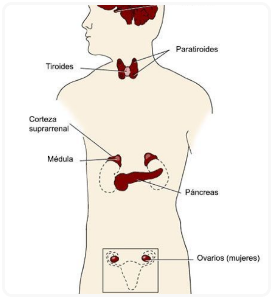

ENDÓCRINO
O Sistema Endócrino é o conjunto de glândulas responsáveis pela produção dos hormônios, lançados no sangue e percorrem o corpo até chegar aos órgãos-alvo sobre os quais atuam. Estão localizadas em diferentes partes do corpo: hipófise, tireoide e paratireoides, timo, suprarrenais, pâncreas e as glândulas sexuais.
